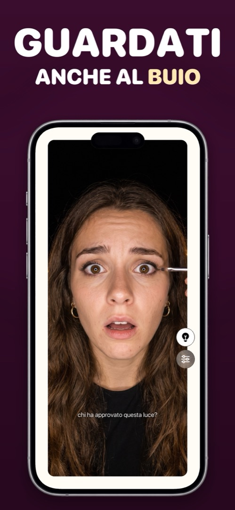

Un’app specchio con luce: per auto buie, bagni poco illuminati e serate lunghe
I momenti in cui uno specchio serve di più sono quelli in cui non c’è una luce decente: l’auto prima di entrare, il bagno di un ristorante con una sola lampadina «d’atmosfera», una camera d’albergo alle 6 del mattino, l’ultima fila al cinema. Un’app specchio con luce integrata risolve il problema in un modo che la torcia dell’iPhone non può.
Perché la torcia non aiuta
Il flash LED dell’iPhone è sul retro, accanto alle fotocamere posteriori. La fotocamera frontale non ha nessun LED: quando scatti un selfie al buio, iOS fa lampeggiare per un istante tutto lo schermo in bianco (Apple lo chiama flash Retina). Per una foto funziona, ma si accende solo per una frazione di secondo quando premi lo scatto. Non puoi tenerlo acceso per guardarti.
Lo schermo è la luce
Il trucco di una buona app specchio è lo stesso del flash Retina, ma tenuto acceso: illuminare i bordi del display alla massima luminosità, così lo schermo diventa una piccola luce ad anello puntata dritta sul tuo viso. Poiché la luce circonda la fotocamera, è uniforme e senza ombre: più vicina a uno specchio da trucco che a una torcia del telefono. Una buona app ti lascia anche rendere la luce più calda o più fredda, perché il fondotinta non rende allo stesso modo sotto una lampadina calda e alla luce del giorno.
Come sfruttarla al meglio
- Distanza: 20–30 cm dal viso. Più vicino, la luce è dura; più lontano, cala in fretta.
- Evita il controluce: non metterti con una finestra o una lampada alle spalle: la fotocamera esporrà per lo sfondo e il tuo viso diventerà scuro.
- Luminosità: un’app specchio dovrebbe portarla al massimo da sola. Con il risparmio energetico attivo il tetto è più basso: disattivalo un momento se ti serve tutta la luce possibile.
- Abbinala allo zoom per eyeliner, lenti a contatto e denti: luce più ingrandimento è ciò che serve davvero in un bagno buio.
Come farlo in Mirrorly
Questa è la luce ad anello di Mirrorly. Per usarla:
- Apri Mirrorly. La luminosità dello schermo sale da sola al massimo.
- Tocca il pulsante della lampadina. Il bordo dello schermo diventa una luce ad anello e illumina il tuo viso. (Se Mirrorly rileva una luce scarsa, te lo suggerisce da sola.)
- Apri le impostazioni (icona dei cursori) per rendere la luce più calda o più fredda.
- Tieni il telefono a circa una spanna di distanza, rivolto verso di te, senza fonti luminose alle spalle. Tocca di nuovo la lampadina per spegnere.

Mirrorly arriva presto sull’App Store.
Uno specchio a schermo intero per iPhone con luce ad anello, zoom e luminosità al massimo. Tre controlli gratuiti, poi un acquisto una tantum: niente abbonamento, niente foto salvate, niente account, niente pubblicità.